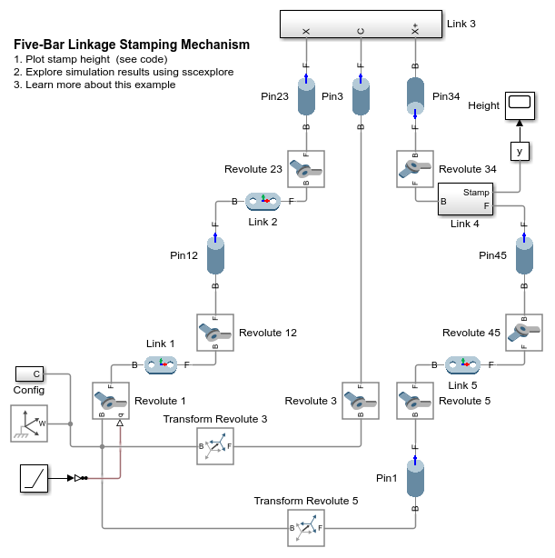
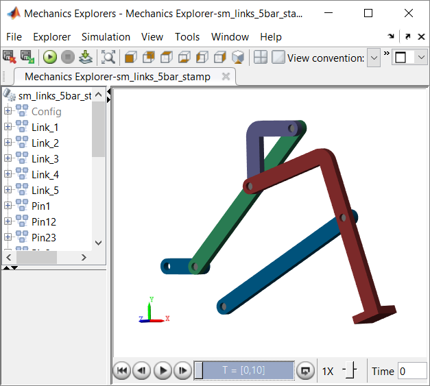
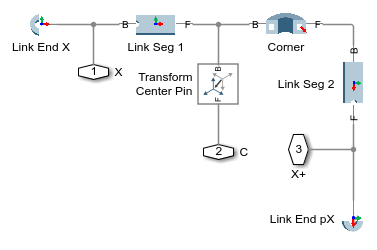
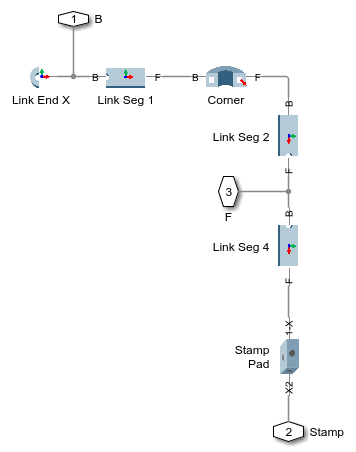
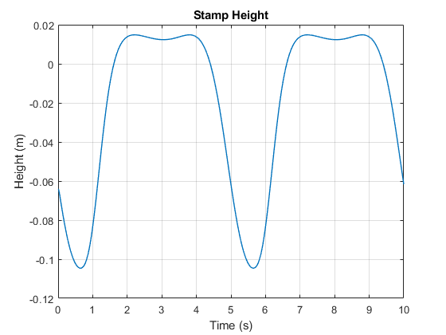

Five-Bar Linkage Stamping Mechanism
This example models a stamping mechanism using the Simscape Multibody Parts Library. It is a five-bar linkage with a single degree of freedom. Assembling basic, parameterized parts enables quick modeling of a mechanism with a complex movement. Varying the parameter values enables exploration of the motion this mechanism can achieve.
Contents
Model

Link 3 Subsystem
This subsystem models a linkage with a bend and three attachment points. Straight and curved parts are combined to create the linkage. Block Transform Center Pin adds a frame at the correct location for the pin.
Link 4 Subsystem
This subsystem models another curved linkage with three attachment points. The stamping pad is attached to the end of the link.
Simulation Results from Simscape Logging
The plot below shows the height of the stamping pad as Link 1 rotates.
